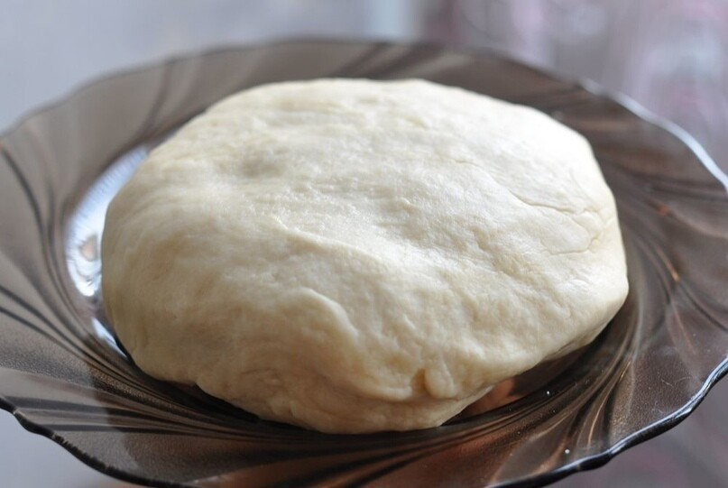
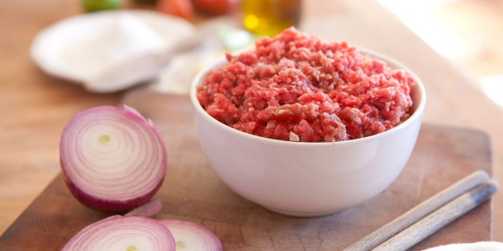
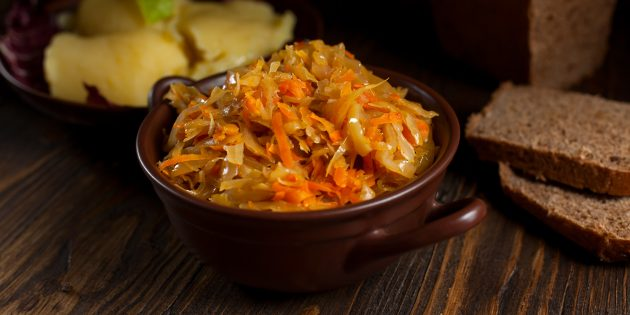

Как приготовить тесто для чебуреков
Как приготовить начинку для чебуреков
Как приготовить тесто для чебуреков
Классического теста для этого блюда не существует. Мы предлагаем несколько самых распространённых и удачных вариантов.
Из всех видов теста получатся тонкие хрустящие чебуреки с пузырьками. Тесто на воде комнатной температуры и на кефире будет менее пузырчатым, но не менее нежным и вкусным.
Для приготовления может уйти меньше или больше муки, чем указано в рецепте. Во многом это зависит от её качества. Ориентируйтесь на само тесто: оно должно быть эластичным, податливым и не липким.
1.Заварное тесто на кипятке
Ингредиенты
- -500 г муки;
- -1 чайная ложка соли;
- -50 мл растительного масла;
- -150 мл кипятка.
Приготовление
Добавьте в муку соль и масло и слегка перемешайте. Частями вливайте крутой кипяток, постоянно перемешивая массу. Затем вымесите тесто руками до однородности.
Накройте плёнкой или посудой и оставьте при комнатной температуре на 30 минут.
2.Тесто на воде комнатной температуры
Ингредиенты
- -400–450 г муки;
- -1 чайная ложка соли;
- -½ чайной ложки сахара;
- -50 мл растительного масла;
- -200 мл воды комнатной температуры.
Приготовление
Соедините муку, соль и сахар. Влейте масло и воду и замесите однородное тесто.
Накройте плёнкой, миской или заверните в пакет и оставьте при комнатной температуре на 30 минут.
3.Тесто на воде с водкой и яйцом
Ингредиенты
- -480–560 г муки;
- -200 мл тёплой воды;
- -1 яйцо;
- -1 чайная ложка соли;
- -½ чайной ложки сахара;
- -4 столовые ложки водки;
- -5–6 столовых ложек растительного масла.
Приготовление
Всыпьте в миску 250 г муки и сделайте в центре углубление. Добавьте туда все остальные ингредиенты и перемешайте. Вымешивайте тесто, подсыпая остальную муку.
Готовое тесто накройте плёнкой или посудой и оставьте на 1 час или дольше. За этот промежуток времени несколько раз вымешайте тесто.
4.Тесто на воде с уксусом
Ингредиенты
- -500 г муки;
- -250 мл воды комнатной температуры;
- -½ столовой ложки растительного масла;
- -¾ чайной ложки уксуса 9%;
- -¼ столовой ложки соли;
Приготовление
Влейте в муку воду, масло и уксус. Добавьте соль и тщательно перемешайте. Затем вымесите тесто руками до однородного состояния.
Накройте чем‑нибудь и оставьте при комнатной температуре на 30 минут.
5.Тесто на кефире с яйцом
Ингредиенты
- -250 мл кефира;
- -½ чайной ложки соли;
- -1 яйцо;
- -450–500 г муки.
Приготовление
Слегка взбейте кефир с солью и яйцом. Затем частями подсыпайте муку, каждый раз хорошенько перемешивая тесто. После помесите его руками.
Накройте плёнкой, посудой или полотенцем и оставьте при комнатной температуре на 20–30 минут.
6.Тесто на молоке с водкой
Ингредиенты
- -250 мл молока;
- -1 чайная ложка соли;
- -2 столовые ложки водки;
- -500 г муки.
Приготовление
Соедините молоко, соль и водку. В два этапа всыпьте муку, хорошенько вымешивая тесто после каждого добавления.
Когда станет однородным, заверните в пакет и уберите в холодильник на 40 минут или чуть‑чуть подольше.
Как приготовить начинку для чебуреков
Традиционной начинкой для этого блюда является мясо. Но есть и нестандартные варианты, например сыр, овощи и грибы.
Количество начинки примерно рассчитано на количество теста, рецепты которого даны выше. Начинки в чебуреках будет не мало, но и не слишком много.
1.Начинка для чебуреков с мясом
Классикой считается баранина, хотя очень часто чебуреки готовят с говядиной, свининой или их смесью. Можно также использовать курицу и индейку.
Ингредиенты
- -300–350 г любого мяса или мясного фарша;
- -2–3 луковицы;
- -соль — по вкусу;
- -молотый чёрный перец — по вкусу;
- -50–80 мл ледяной воды;
- -любимые специи и зелень — опционально.
Приготовление
Пропустите мясо вместе с луком через мясорубку. Если используете готовый фарш, смешайте его с измельчённым луком.
Приправьте мясо солью и перцем. Добавьте воду и перемешайте. Вода делает начинку сочной, поэтому количество жидкости лучше регулировать в зависимости от жёсткости мяса. В итоге масса по консистенции должна напоминать густую сметану.
Если хотите, добавьте в начинку другие специи и рубленую зелень.
2.Начинка для чебуреков с сыром

Самый простой вариант начинки. Вкус чебуреков будет зависеть от выбора сыра. Отлично подойдёт, например, сулугуни, брынза или адыгейский. Можно использовать обычный твёрдый сыр (обязательно качественный) или добавить его к перечисленным сортам.
Ингредиенты
- -400 г. сыра;
- -соль — опционально, по вкусу;
- -½ пучка укропа или другой зелени — опционально.
Приготовление
Натрите сыр на крупной тёрке. При необходимости подсолите его.
Если используете зелень, мелко порубите её и смешайте с сыром.
3. Начинка для чебуреков с картошкой и зеленью
Зелень очень удачно сочетается с овощами, но при желании её можно не добавлять.
Ингредиенты
- -5–6 картофелин (около 500 г);
- -соль — по вкусу;
- -кусочек сливочного масла;
- -½–1 луковица — опционально;
- -2 столовые ложки растительного масла — опционально;
- -½ пучка укропа или зелёного лука (или их смеси).
Приготовление
Очистите картошку и нарежьте крупными кусочками. Отварите в подсоленной воде до готовности. Слейте жидкость, добавьте сливочное масло и превратите картошку в пюре.
Для аромата можно добавить туда репчатый лук. Мелко порубите его и слегка спассеруйте на разогретом растительном масле.
В остывшее пюре закиньте обжаренный лук и мелко нарубленную зелень и тщательно перемешайте.
4. Начинка для чебуреков с грибами и сыром
Сочетание ароматных шампиньонов и тянущегося горячего сыра наверняка понравится многим.
Ингредиенты
- -300 г шампиньонов;
- -2–3 столовые ложки растительного масла;
- -соль — по вкусу;
- -молотый чёрный перец — по вкусу;
- -150 г твёрдого сыра;
- -несколько веточек укропа или другой зелени — опционально.
Приготовление
Нарежьте шампиньоны небольшими кусочками. Разогрейте в сковороде масло и обжаривайте грибы, пока из них не выпарится жидкость. Приправьте солью и перцем.
Приправьте солью и перцем.Сыр натрите на крупной тёрке. Смешайте с остывшими шампиньонами. Начинку можно соединить с рубленым укропом.
5.Начинка для чебуреков с капустой и морковью
Ингредиенты
- -½ кочана капусты;
- -1 морковь;
- -1 луковица;
- -1–2 столовые ложки растительного масла;
- -кусочек сливочного масла;
- -соль — по вкусу;
- -молотый чёрный перец — по вкусу;
- -1 чайная ложка сушёного чеснока;
- -несколько веточек петрушки или другой зелени.
Приготовление
Тонко нашинкуйте капусту, натрите морковь на крупной тёрке и мелко нарежьте лук.
Разогрейте растительное масло на сковороде. Слегка обжарьте лук, затем добавьте морковь и сливочное масло. Готовьте овощи до золотистого цвета.
Добавьте в сковороду капусту, соль, перец и чеснок и перемешайте. Можно добавить другие приправы на ваш вкус. Тушите капусту на слабом огне под крышкой до мягкости, минут 15–20. Добавьте в начинку рубленую зелень и остудите.
6. Начинка для чебуреков с тыквой
Ингредиенты
- -700–800 г мякоти тыквы;
- -1 луковица;
- -2 столовые ложки растительного масла;
- -соль — по вкусу;
- -молотый чёрный перец — по вкусу;
- -3 зубчика чеснока;
- -1 щепотка молотого кориандра.
Приготовление
Нарежьте тыкву и лук мелкими кубиками. Разогрейте на сковороде масло и слегка обжарьте лук. Добавьте тыкву и готовьте, пока она не станет мягкой.
В конце закиньте соль, перец, измельчённый чеснок и кориандр. Готовую начинку остудите.